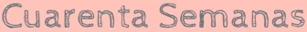

{% load static i18n %}
{% block css %}
{% endblock %}
Cuarenta Semanas
{% if inicioview%} {% endif %} {% if not inicioview%} {% endif %}

☰
Inicio
{% if not user.is_authenticated %}
Iniciar Sesión
{% endif %} {% if user.is_authenticated %}
Mi perfil
Agenda
Diario de seguimiento
Mis datos
Cerrar Sesión
{% endif %}
{% block contenido %} {% endblock %} {% block js %} {% endblock %}